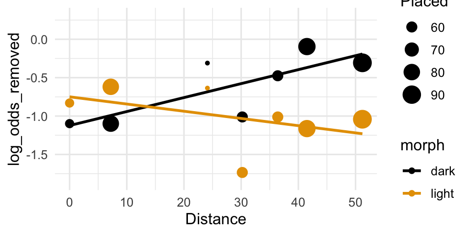
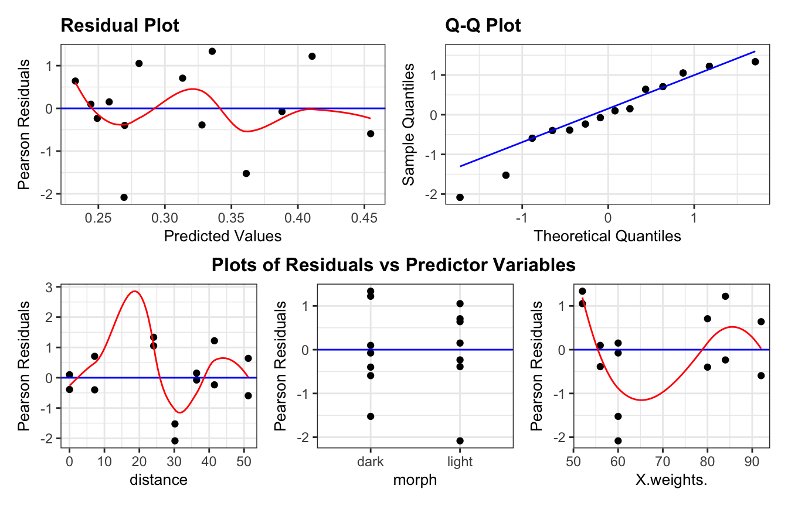
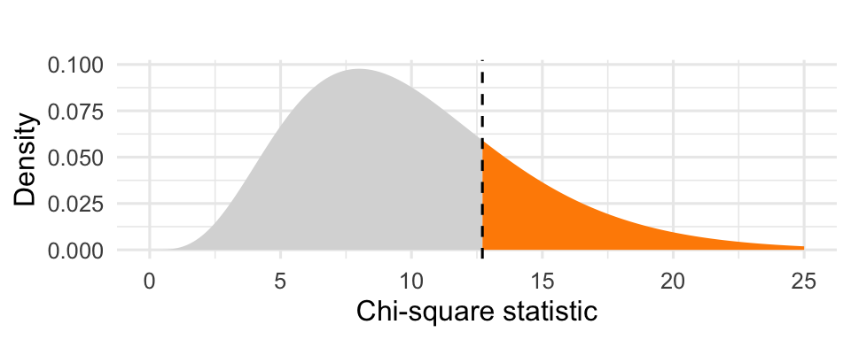

| morph | distance | placed | removed | proportion removed |
|---|---|---|---|---|
| light | 0.0 | 56 | 17 | 0.304 |
| dark | 0.0 | 56 | 14 | 0.250 |
| light | 7.2 | 80 | 28 | 0.350 |
| dark | 7.2 | 80 | 20 | 0.250 |
| light | 24.1 | 52 | 18 | 0.346 |
| dark | 24.1 | 52 | 22 | 0.423 |
| light | 30.2 | 60 | 9 | 0.150 |
| dark | 30.2 | 60 | 16 | 0.267 |
| light | 36.4 | 60 | 16 | 0.267 |
| dark | 36.4 | 60 | 23 | 0.383 |
| light | 41.5 | 84 | 20 | 0.238 |
| dark | 41.5 | 84 | 40 | 0.476 |
| light | 51.2 | 92 | 24 | 0.261 |
| dark | 51.2 | 92 | 39 | 0.424 |
Day 23: Binomial logistic regression
Data: moths and natural selection
Researchers glued equal numbers of light and dark morph moths to tree trunks at 7 locations from 0 to 51.2 km from Liverpool, where the trees were blackened by pollution. After 24 hours, they recorded how many moths had been removed (presumably eaten by predators).
morph: light or darkdistance: kilometers from LiverpoolPlaced: number of moths of that morph placed at that locationRemoved: number of those moths removed after 24 hours
On HW8, we used the model:
model1 <- lm(log_odds_removed ~ distance + morph + distance * morph,
data = moths)What is the Y variable? What is the fitted equation?
Why doesn’t this glm code work?
model1 <- glm(Removed ~ distance + morph + distance * morph,
data = moths, family = "binomial")Error:
! y values must be 0 <= y <= 1The binomial response
Let \(Y_i\) be the ______________ of successes (here: moths removed) out of \(n_i\) trials (here: moths placed) in row \(i\). We assume the \(n_i\) trials in each row are independent and have the same probability of success \(\pi_i\).
NoteBinomial distribution
The sum of \(n\) independent success/failure trials, each with success probability \(\pi\), follows a Binomial\((n, \pi)\) distribution:
\[E(Y) = \underline{\hspace{2cm}} \qquad\qquad Var(Y) = \underline{\hspace{3cm}}\]
A binary response is the special case \(n =\) ______.
The binomial logistic regression model
The model is the same as before: it describes how the probability of success depends on the predictors, using the logit link.
\[\pi_i = P(Y=1| x_1, ..., x_p)\]
Log-odds scale:
\[\text{logit}(\pi_i) = \log\left(\frac{\pi_i}{1 - \pi_i}\right) = \underline{\hspace{5cm}} = \eta_i\]
Probability scale:
\[\underline{\hspace{1cm}} = \dfrac{e^{\eta_i}}{1 + e^{\eta_i}}= \dfrac{e^{\beta_0 + \beta_1 x_{1i} + \beta_2 x_{2i} + \cdots + \beta_p x_{pi}}}{1 + e^{\beta_0 + \beta_1 x_{1i} + \beta_2 x_{2i} + \cdots + \beta_p x_{pi}}}\]
Response distribution: \(Y_i \sim \text{Binomial}(n_i, \pi_i)\).
On the homework, we modeled the empirical log odds with lm():
\[ \operatorname{\widehat{log\_odds\_removed}} = -1.123 + 0.018(\operatorname{distance}) + 0.374(\operatorname{morph}_{\operatorname{light}}) - 0.028(\operatorname{distance} \times \operatorname{morph}_{\operatorname{light}}) \]

This approach required calculating the empirical log-odds “by hand” and adding to the dataset. Alternatively, we can fit with glm() using the weights argument
model3 <- glm(Removed/Placed ~ distance + morph + distance*morph,
weights = Placed,
data = moths,
family = "binomial")# A tibble: 4 × 5
term estimate std.error statistic p.value
<chr> <dbl> <dbl> <dbl> <dbl>
1 (Intercept) -1.13 0.198 -5.70 0.0000000117
2 distance 0.0185 0.00565 3.28 0.00105
3 morphlight 0.411 0.274 1.50 0.134
4 distance:morphlight -0.0278 0.00809 -3.44 0.000588 Note: the estimates are slightly different due to different ________________________
Checking conditions
NoteBinomial logistic regression conditions
- Binomial counts: \(Y_i\) is the number of successes in \(n_i\) trials
- Independence: the trials (and the rows) are ______________
- Linearity: the ______________ is a linear function of the predictors
- Variance structure: \(Var(Y_i) =\) ______________, which is not constant, but is determined by the mean. We don’t need an “equal variance” condition.
We check linearity with empirical logit plots (as in Day 20), but now every row is already a group, so we don’t need to bin.
And we check linearity after accounting for the other predictors with Pearson residuals:
NotePearson Residuals
\[\text{Pres}_i = \frac{Y_i - n_i\hat\pi_i}{\sqrt{n_i\hat\pi_i(1-\hat\pi_i)}}\]
For large enough \(n_i\), Pearson residuals behave approximately like draws from a ______________ distribution (unlike binary logistic regression, where the residuals were in two bands). We plot them against the fitted values and the predictors, with a smoother.

Because each row is a group, we can ask a question we couldn’t ask before: does the model fit the group proportions?
NotePearson \(\chi^2\)
The Pearson \(\chi^2\) statistic compares the observed counts \(Y_i\) to the counts the model predicts, \(n_i\hat\pi_i\):
\[X^2 = \sum_i\frac{(Y_i - n_i\hat\pi_i)^2}{n_i\hat\pi_i(1-\hat\pi_i)} = \sum_i \text{Pres}_i^2\]
- \(X^2\) is ______________ when the predicted counts are close to the observed counts (good), and ______________ when they are far away (bad).
- If the model is correct and all the counts are large enough (about 5 or more successes and failures in every row), \(X^2 \overset{\cdot}{\sim} \chi^2\) with \(df = n - (p+1)\), where \(n\) is the number of rows (binomial observations), not the number of moths.
NoteGoodness-of-fit test
Hypotheses: \(H_0\): ______________________________ (the model is adequate) vs. \(H_a\): the model is inadequate
Test statistic: \(X^2\) = the sum of the squared Pearson residuals
Reference distribution: \(\chi^2\) with \(df =\) ______________________________
p-value: the area ______________ \(X^2\) (upper tail). A small p-value is evidence of lack of fit.
X2 <- sum(residuals(model3, type = "pearson")^2)
X2[1] 12.70859df.residual(model3)[1] 10To find the p-value:
1 - pchisq(____, ____)
Warning
This goodness-of-fit test is only valid for binomial logistic regression with large enough \(n_i\). It is not valid for binary logistic regression (each row has \(n_i = 1\)).
Summary
| Binary logistic | Binomial logistic | |
|---|---|---|
| Response | ||
glm() response |
||
| Residual plots | ||
| Goodness-of-fit test valid? | ||
- Binomial logistic regression models the ______________ of success for each row, using the same logit link as binary logistic regression.
- The variance of \(Y_i\) is ______________, so it depends on \(\pi_i\).
- Pearson residuals behave like \(N(0,1)\) draws when the \(n_i\) are large, so we can plot them against fitted values and predictors.
- The Pearson \(X^2\) statistic is compared to a \(\chi^2\) distribution with \(n-(p+1)\) df to test goodness of fit.
R function reference
| Function | Purpose |
|---|---|
glm(y/n ~ x, weights = n, data, family = "binomial") |
Fit a binomial logistic regression (proportion response with weights) |
glm(cbind(y, n - y) ~ x, data, family = "binomial") |
Same model, with a (successes, failures) response |
resid_panel(model, type = "pearson", smoother = TRUE) |
Pearson residual plots |
resid_xpanel(model, type = "pearson", smoother = TRUE) |
Pearson residuals against each predictor |
sum(residuals(model, type = "pearson")^2) |
Pearson \(X^2\) statistic for the goodness-of-fit test |
1 - pchisq(X2, df) |
Upper-tail \(\chi^2\) probability (p-value) |